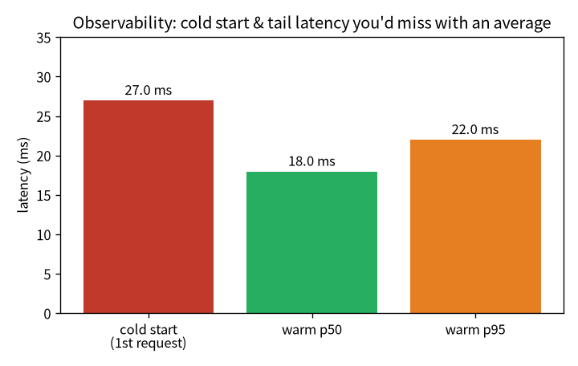

flowchart LR A["01 GPT"]-->B["02 零件"]-->C["03 效率"]-->D["04 資料"]-->E["05 評估"]-->F["06 服務"]-->G["07 治理"]-->H["08 漂移"] E -.後訓練.-> I["09 對齊"] classDef here fill:#c0392b,color:#fff,stroke:#7b241c,stroke-width:2px; class F here
6 服務化與可觀測：從 checkpoint 到能被呼叫的服務
一句話：訓練是「離線、一次性、看 loss」；服務是「線上、持續、面對真實流量」。把模型變成 能被呼叫、看得見、量得到的服務，是 MLOps 的第一關。
注记這章的定位（讀之前先對齊期待）
假設你已經會：第 5 章的評估判準。不需要 MLOps / k8s / 容器背景（會用到的概念都會在這裡建立類比）。
學完你會：(1) 說清楚服務跟訓練要的東西差在哪（快 / 可觀測 / 可重現）；(2) 逐行把一個帶 metrics 的最小推論服務建起來；(3) 在你自己的 CPU 上親手量到冷啟動與尾延遲 p95—— 體會「你不量就不知道、量了立刻看到」這句可觀測性的核心。本章 💻 配套程式 tiny_observability.py 純 CPU、十幾秒、不需語料、不需 GPU。
提示🎯 給技術主管：本章關鍵術語速查（懂的人可跳過）
不必親手實作也能跟上——每個術語一句白話 + 為什麼你該在意。
- 推論 API（FastAPI）：把模型包成可被呼叫的服務。在意它：模型要能被產品呼叫才有價值。
- 延遲 / 吞吐（latency / throughput）：回應多快、每秒處理多少。在意它：使用者體感與容量規劃的兩個基本盤。
- p50 / p95（百分位）：延遲分布的中位與尾巴。在意它：只看平均會把尾延遲藏起來；SLA 該訂在尾巴。
- 冷啟動：第一個請求特別慢。在意它：低流量、剛部署時的體感雷。
- 可觀測性（Prometheus / Grafana）：自動記錄每個請求的數據。在意它：不量就不知道、量了立刻看到。
- podman pod / 容器：把服務打包、隔離、可重現部署。在意它：通往 k8s 的平滑路徑。
6.1 服務跟訓練要的東西不一樣
前面五章我們把一個模型訓出來、評估好了。但「訓出一個好模型」和「有一個能上線、能被呼叫、能被 觀測的系統」是兩回事。服務要的東西完全不同——要快、要能被呼叫、要看得到。我把它一層層接起來：
- 推論 API：用 FastAPI 把模型包成服務，常駐載入 checkpoint 和 tokenizer。端點有
/health（就緒探針，回模型載好沒、device、參數量）、/generate（主端點，回生成文字 + 延遲 + 吞吐）、/metrics（給 Prometheus 抓）、/model（治理，回報自己是哪顆模型——下一章 章节 7 詳談）。 - 可觀測性：Prometheus metrics（請求數、延遲 histogram、生成 token 數）加結構化 JSON 日誌， 每個請求自動計數、計時、記狀態。
- 容器化：用 Podman + GPU（透過 CDI passthrough）把服務打包。模型權重用 runtime mount 掛進去、 跟映像解耦——換模型不用重 build 映像。
- 監控儀表板：Prometheus + Grafana，用一個 podman pod 把 API、Prometheus、Grafana 三個容器放在 一起、共享 localhost。
提示podman pod 就是 k8s「Pod」的微縮版
把多個容器放進一個 pod、共享網路命名空間、互相用 localhost 找得到——這正是 Kubernetes「Pod」概念的 微縮版。單機這樣剛好夠；要多副本、跨機、自動擴縮，才需要真的 k8s。從這裡到 k8s 是一條平滑的路。
6.2 逐行把一個「會自報 metrics」的服務建起來
服務的骨架不神祕：常駐一顆模型 + 每個請求自動記數據。我們用 tiny_observability.py 逐行建出來。
第 0 步——常駐模型。 服務啟動時把模型載進記憶體一次，之後每個請求重複用（不要每次都重載）：
第 1 步——每個請求自動記 metrics。 處理請求時順手計時、計數、累計 token。可觀測性的精神就是 「把每個請求的事實留下來」：
第 2 步——別只看平均，看百分位。 平均延遲會被少數慢請求拉歪、也會把尾延遲藏起來。使用者體感 是尾巴（p95、p99），所以服務要看百分位：
6.3 💻 在你的機器上：冷啟動與尾延遲
可觀測性最好的學法是親手量一次。配套程式 tiny_observability.py（純 CPU、十幾秒、不需語料）把 一顆小模型包成服務、打 30 個請求、印出延遲：
在我的 Framework 16（純 CPU）上：
模型 0.83M，device=cpu
=== 打 30 個請求，看延遲 ===
冷啟動（第 1 個請求）： 27.0 ms
暖機後 p50： 18.0 ms
暖機後 p95： 22.0 ms
冷/暖倍數： 1.5×
=== /metrics（一裝上就有數據）===
requests_total = 30
tokens_generated = 1200
latency_p50_ms = 18.0
latency_p95_ms = 22.0怎麼讀：
- 冷啟動是真的：第一個請求明顯比之後慢（這裡 CPU 上約 1.5×；原因是 lazy 初始化、執行緒池暖機、 配置快取）。在 GPU 上更誇張——我在正式服務量到第一個請求約 354 ms、暖機後約 50 ms（首次 呼叫要即時編譯 CUDA kernel）。不管哪種，重點一樣：量了才知道。
- 看尾巴不看平均：p95（22 ms）比 p50（18 ms）高——使用者體感是尾延遲。只報平均會把這段藏起來。

注记可觀測性的價值＝把模糊變事實
图 6.1 的每一根都是「你不主動量、就只會憑感覺」的東西。可觀測性把「好像第一次比較慢」變成 「冷 27 ms vs 暖 18 ms」、把「大致還行」變成「p95 = 22 ms」。先有事實，才有得優化、才有得對 SLA 負責。
6.4 帶走什麼
- 服務跟訓練要的東西不同：要快、能被呼叫、看得見。推論 API + metrics + 容器 + 儀表板一層層接起來。
- podman pod 是 k8s Pod 的微縮版——單機夠用，要擴縮才上 k8s。
- 可觀測性的核心是把模糊變事實：冷啟動、尾延遲 p95 都是「不量就不知道、量了立刻看到」。
- 服務只是整條鏈的一段——下一章把它接到治理（章节 7）：線上這顆到底是哪顆、憑什麼上線。
6.5 練習
注记1（先預測）：把 n_new 加大，冷/暖差距會怎樣？
tiny_observability.py 每個請求生成 40 個 token。先寫下你的預測：把 n_new 加到 200，冷啟動相對 暖機的「倍數」會變大還變小？
提示參考答案
通常倍數變小——冷啟動的固定開銷（初始化、暖機）被攤平到更長的生成上，佔比下降。這也是為什麼 「冷啟動」在短請求、低流量服務上最有感。動手把 n_new 改大，看冷/暖倍數怎麼收斂。
注记2（動手）：加一個 p99
服務的 SLA 常用 p99。在 pct 的基礎上印出 p99，比較 p50/p95/p99。它們的差距告訴你什麼？
提示參考答案
p99 通常比 p95 再高一截——尾巴越往後拉越長。p50 和 p99 差很多，代表延遲分布有長尾（少數請求很慢）， 這種情況只報平均會嚴重低估使用者最差體感。SLA 訂在 p95/p99 而非平均，正是為了對尾巴負責。
警告3（弄壞）：只報平均延遲
把延遲報告改成只印 mean(latencies)，把冷啟動那一筆也混進去平均。這會掩蓋掉什麼？
提示參考答案
平均會把冷啟動的那一筆大值稀釋進去、也把尾延遲藏起來——你會得到一個「看起來還行」的數字，卻看不到 「第一個請求很慢」和「p95 偏高」這兩個真正影響體感的事實。這就是為什麼可觀測性要看分布（百分位）、 不只看一個總數——又一次「選對指標」。